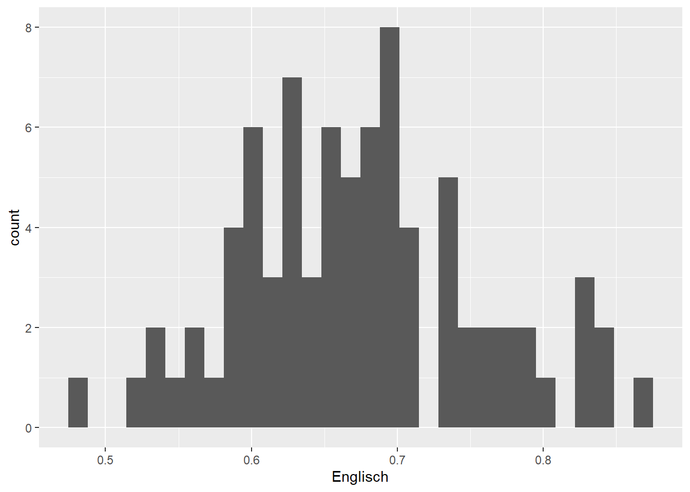
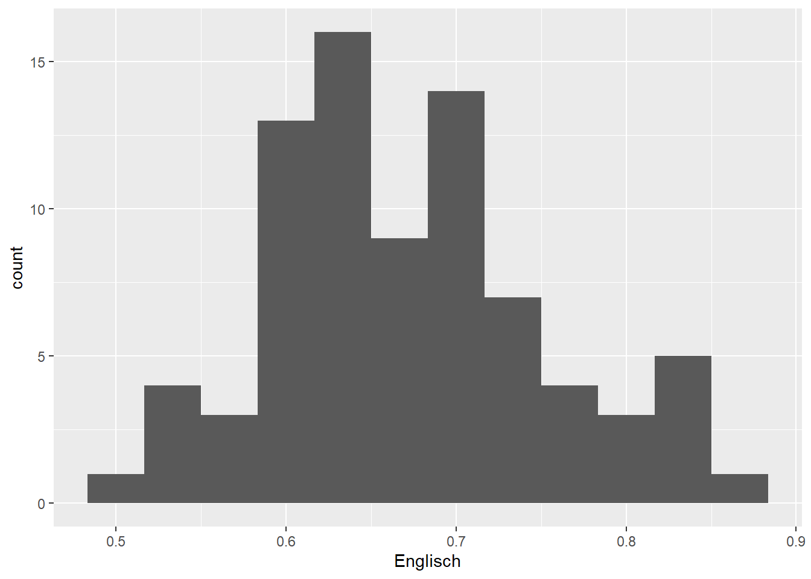
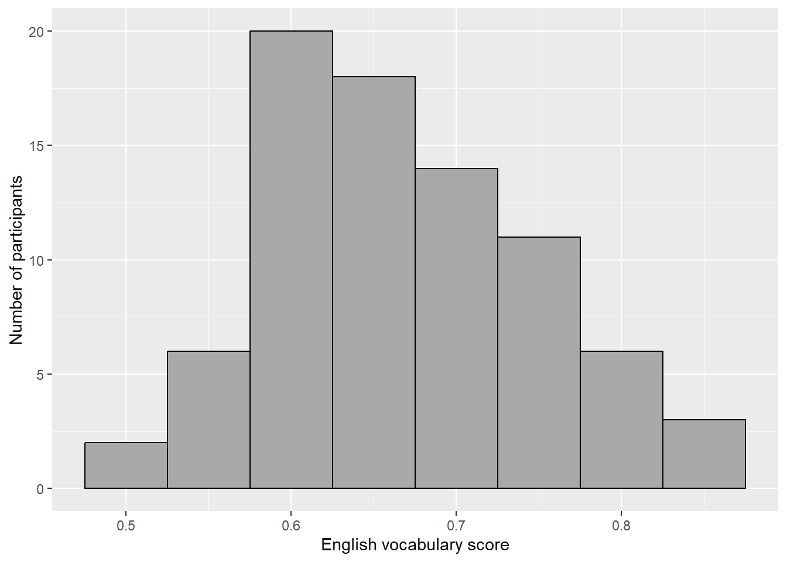

2 Week 2: Reading in data and drawing a histogram
2.1 Goals
- You’ll learn what CSV files are and how you can import them into
R. - You’ll learn how to draw a histogram, a useful kind of graph for gauging how a variable is distributed.
- You’ll learn how to label your graphs’ axes.
2.2 Importing CSV files into R
- On Moodle you’ll find a file named
Vanhove2015_Vpn.csv. This file contains a couple of pieces of information about the participants in an experiment that I conducted a couple of years ago:ID, scores on German, English and French vocabulary tests (Wortschatz,EnglischandFranzösisch, respectively), sex (Geschlecht), and age (Alter). Save the CSV file directly to thedatasubdirectory in the R project directory that you created last week. Do not open the file in Excel first to use its ‘save as’ function: On German- and French-language systems (among others), this tends to mess up the file’s internal structure. - Open the CSV file using a text editor (e.g., Windows’ Wordpad or Gnu’s gedit) and note how the file is structured: There are separate columns for each variable, and each line contains data for one participant only. Different values are separated by commas (hence CSV: comma-separated values).
- You can also open the CSV file in Excel, LibreOffice Calc or other spreadsheet software, but be careful not to use the ‘save as’ function unless you know what you’re doing. If you use the ‘save as’ function in Excel on a non-English system, the commas will be replaced by semi-colons and chaos will ensue. (I prefer LibreOffice Calc, which is free software and which allows you to save CSV files as, well, CSV files.)
- Open the R project that you created last week, e.g., by double-clicking the
.Rprojfile. - Create a new script (
File > New File > R Script). - Type the commands for loading the
tidyverseandherepackages in this script and run them. (See last week.) Note that you do not have to reinstall these packages; you just need to load them. - Add and run the following command. It reads in the CSV file
Vanhove2015_Vpn.csvstored in thedatasubdirectory and assigns its contents to a new object that can be referred to in R asd_hist. You can pick another name, but then you’ll have to make the necessary changes in the code that follows, too; I used_histbecause we’re working with a dataset and we’re going to draw a histogram. The ‘assignment operator’ is an arrow made up from a less than sign (<) and a dash (-). (You can use the shortcurt alt + - on Windows/Linux or Option + - on Mac.) The output at the console is merely a message that tells you how the data were parsed: there is one column containing text (characters,chr) and four columns containing numeric information (in a double-precision floating-point format, hencedblbut that’s not relevant now).
## Rows: 80 Columns: 6
## ── Column specification ────────────────────────────────────────────────────────
## Delimiter: ","
## chr (1): Geschlecht
## dbl (5): VPN, Wortschatz, Englisch, Französisch, Alter
##
## ℹ Use `spec()` to retrieve the full column specification for this data.
## ℹ Specify the column types or set `show_col_types = FALSE` to quiet this message.- If you type in the name of the newly created object (viz.,
d_hist) to the R prompt, you’ll see part of the dataset displayed. If you want to inspect the whole dataset, use the following command:
- If that worked, congratulations: You’ve successfully imported the data set. If not: Double-check your steps (including downloading the dataset). If it still doesn’t work, upload the dataset as you’ve downloaded it as well as the R commands that you used to Moodle along with any error messages or warnings.
2.3 Drawing a histogram
A histogram shows how a variable is distributed (see Johnson 2013). Histograms are particularly useful to check if there are any ‘univariate’ outliers (i.e., values that lie far from the bulk of the data if you consider only this one variable) and to see if the variale seems to be distributed approximately uniformly, normally, bimodally or more wonkily.
Since you’ve already loaded the tidyverse and since you’ve already read in the data, we can start to draw some histograms.
Like for last week’s scatterplot, we need to define the object and the variables we want to plot (lines 1–2). Instead of drawing points, we draw a histogram:
ggplot(data = d_hist, # specify data set
aes(x = Englisch)) + # variable to be drawn
geom_histogram() # draw as histogram## `stat_bin()` using `bins = 30`. Pick better value with `binwidth`.
The histogram shows, among other things, that there are 8 individuals with an English vocabulary score just below 0.7 and 4 with a score just below 0.6. By default, 30 such bins are drawn, but as the warning indicates (‘Pick better value’), there’s nothing special about this number. You can adjust the desired bin width:
ggplot(data = d_hist,
aes(x = Englisch)) +
geom_histogram(binwidth = 0.05) # binwidth of 0.05 pointsggplot(data = d_hist,
aes(x = Englisch)) +
geom_histogram(binwidth = 1/30) # binwidth of 1/30 points
There aren’t any hard and fast rules for determining the optimal bin width. The default settings (1st plot) produce a histogram that seems to be a bit too fine-grained, whereas a bin width of 0.2 (2nd plot) results in too coarse a histogram. The other three histograms seem fine by me; I’d probably pick the 4th or 5th for a presentation or when writing a paper.
2.4 Labelling axes
Use xlab() and ylab() to label axes. Don’t forget the quotation marks.
ggplot(data = d_hist,
aes(x = Englisch)) +
geom_histogram(binwidth = 0.05) +
xlab("English vocabulary score") +
ylab("Number of participants")Important:

Figure 2.1: Source: https://xkcd.com/833/.
2.5 Adjusting the colour scheme
I’ve added two parameters to the geom_histogram() call. You can change
these settings yourself.
ggplot(data = d_hist,
aes(x = Englisch)) +
geom_histogram(binwidth = 0.05,
colour = "black",
fill = "darkgrey") +
xlab("English vocabulary score") +
ylab("Number of participants")
2.6 Exercise
Create one new script with which you draw a suitable histogram for the
Französischvariable as well as for theWortschatzvariable. This will require you to tinker with thebinwidthsetting. Don’t forget to adjust the axis labels. Useggsave()(see last week) to save your preferred histogram for each of the two variables.Compile a HTML report.
Hand in both the HTML report and the two figures via Moodle.